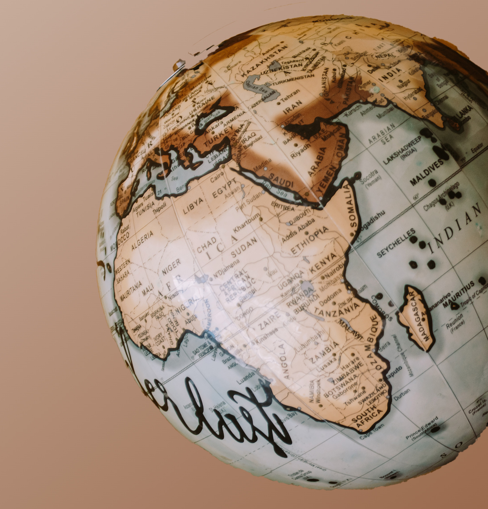

Welcome to Geo Searcher!
Lets get you started - Just put the name of the place you want a map of in the search box below!

Go
Incase you are unable to use the API, here's an alternate!
Open in Google Maps
Made with <3 by Akshit Sharma